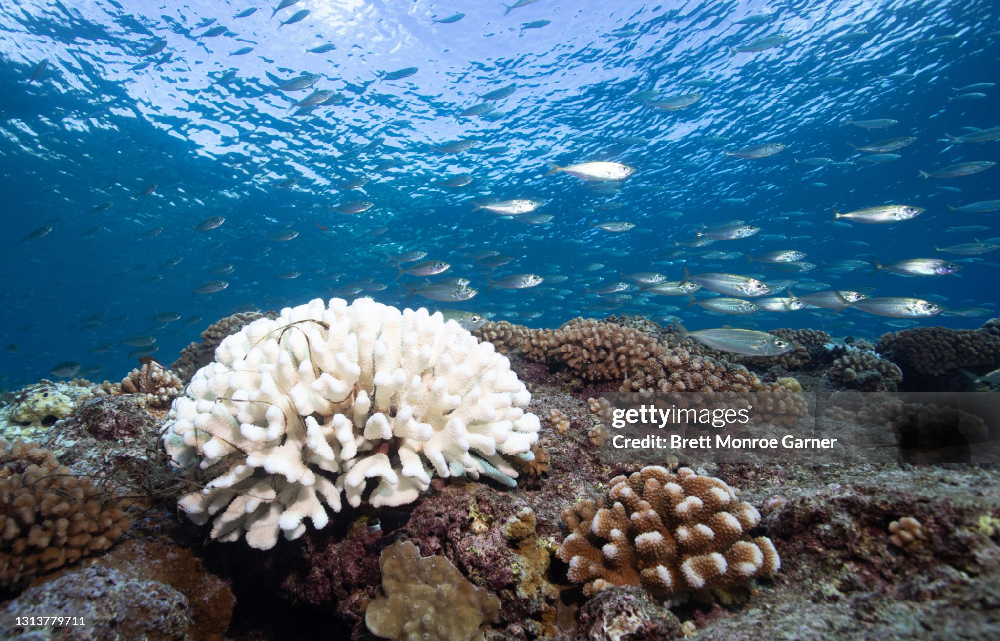
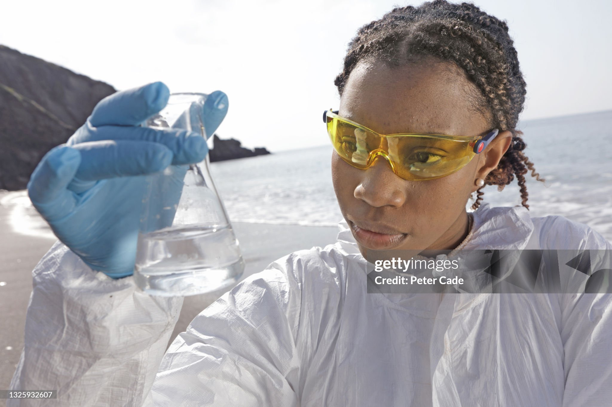
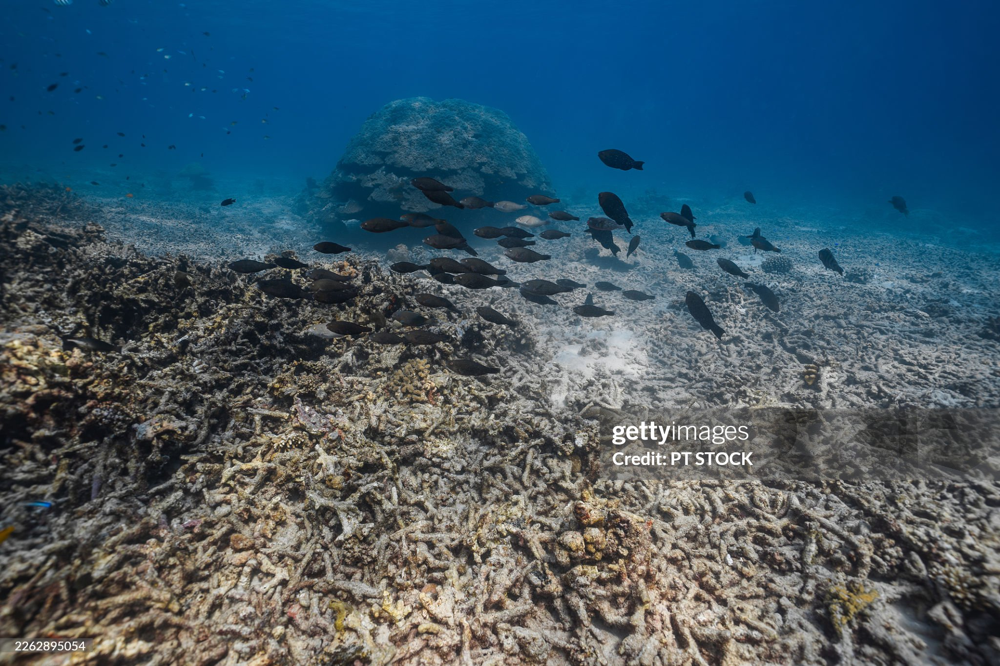
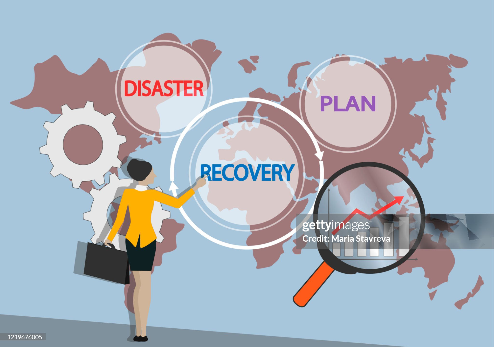

Ocean Acidification & Deep Sea Restoration
Introduction

The world's oceans absorb roughly 30% of all carbon dioxide (CO₂) released into the atmosphere by human activities. While this natural buffering service has slowed the pace of climate change, it comes at a severe cost — the chemical composition of seawater is quietly shifting, making our oceans more acidic year by year.
Ocean acidification is one of the least visible yet most consequential environmental crises of our time. Unlike surface pollution or visible oil spills, it operates silently in the chemistry of the water itself, gradually undermining the foundations of marine food webs and deep-sea habitats.
ⓘ Since the Industrial Revolution, ocean pH has dropped from approximately 8.2 to 8.1 — a 26% increase in acidity, as pH is measured on a logarithmic scale.
This page explores how acidification happens, how it threatens deep-sea ecosystems, and what restoration science is doing to reverse the damage. These challenges are examined in depth in the Impact on Deep Sea Life section.
How Ocean Acidification Works

When CO₂ dissolves into seawater, it reacts with water molecules to form carbonic acid (H₂CO₃). This weak acid then breaks apart, releasing hydrogen ions that lower the water's pH — making it more acidic. Simultaneously, the process consumes carbonate ions, which are the very building blocks that marine organisms use to construct shells and skeletons.
The Chemistry in Brief
The reaction can be summarised as: CO₂ + H₂O → H₂CO₃ → H⁺ + HCO₃⁻. As hydrogen ion concentration rises, carbonate ion availability drops, hampering shell formation in organisms from oysters to pteropods to deep-sea corals.
Why the Deep Ocean Is Most Vulnerable
Cold, high-pressure deep waters naturally hold more dissolved CO₂ and are already closer to the saturation threshold for aragonite and calcite — the minerals used by marine calcifiers. As surface acidification percolates downward over decades, deep-sea ecosystems face the fastest rate of chemical change in millions of years.
- Deep waters absorb CO₂ faster due to lower temperatures
- Aragonite saturation horizons are rising toward the surface
- Cold-water corals below 200 m are acutely exposed
- Abyssal sediments are beginning to dissolve under increased acidity
Impact on Deep Sea Life

The deep ocean — everything below 200 metres — covers over 65% of Earth's surface and contains the greatest volume of living space on the planet. Yet it remains dramatically understudied and underprotected. Acidification is now threatening its most ancient and slow-growing residents.
Cold-Water Coral Frameworks
Unlike tropical corals, cold-water corals do not rely on photosynthesis. They build enormous reef frameworks at depths of 200–2,000 m, providing habitat for thousands of species. Acidified water corrodes their calcium carbonate structures faster than the corals can repair them.
Pteropods and Planktonic Calcifiers
Sea butterflies (pteropods) are free-swimming snails whose shells dissolve visibly in water already observed in parts of the Southern Ocean. As a critical food source for salmon, herring, and whales, their decline would cascade through entire food webs.
Sea Urchins and Echinoderms
Studies show that sea urchin larvae raised in acidified water develop misshapen skeletons and suffer higher mortality rates, disrupting their role as keystone grazers that control algae on rocky seafloors.
ⓘ Scientists estimate that by 2100, up to 70% of cold-water coral habitats could be exposed to corrosive conditions if CO₂ emissions continue at the current rate.
Restoration Strategies

Addressing ocean acidification requires action on two fronts: cutting the CO₂ emissions that drive it, and actively restoring the ecosystems already damaged. A growing body of research is identifying promising interventions at both local and global scales.
Ocean Alkalinity Enhancement (OAE)
By adding alkaline minerals such as olivine or crushed limestone to seawater, scientists can chemically neutralise excess acidity and increase the ocean's capacity to absorb more CO₂. Pilot trials are underway in coastal regions of Norway and New Zealand.
Kelp Forest and Seagrass Restoration
Macroalgae and seagrass beds absorb CO₂ through photosynthesis, locally raising pH and creating refugia where calcifying organisms can shelter. Projects along the Pacific coast of the United States have demonstrated measurable pH improvements within restored kelp canopies.
Deep-Sea Marine Protected Areas (MPAs)
Establishing no-take MPAs around cold-water coral mounts and seamounts reduces additional stressors — trawling damage, sediment disruption — that compound the harm from acidification, giving ecosystems better resilience to withstand chemical changes.
Cold-Water Coral Nurseries
Researchers in Europe and Canada are cultivating cold-water coral fragments in controlled deep-sea nurseries, selectively breeding specimens that show greater tolerance to lower pH. Successful colonies are transplanted back onto degraded reef frameworks.
- Ocean Alkalinity Enhancement is scalable and reversible
- Kelp restoration improves local pH conditions rapidly
- MPAs reduce compounding stressors on vulnerable reefs
- Coral nurseries preserve genetic diversity for future restoration
- Monitoring networks track real-time pH changes at depth
Conclusion
Ocean acidification is not a distant future threat — it is an active, measurable transformation happening right now in the deepest and most remote parts of our planet. The chemistry of our seas has shifted more in the past 200 years than in the previous 20 million, and the deep-sea ecosystems bearing the greatest burden of this change are among the least understood and protected environments on Earth.
Yet there is reason for measured hope. From alkalinity enhancement to coral nurseries and expanding deep-sea MPAs, science is rapidly developing tools that can slow, halt, and in some cases reverse localised acidification damage. The missing ingredient is not innovation — it is the political will to fund these solutions at meaningful scale and, most critically, to address the root cause: relentless CO₂ emissions.
Protecting the deep ocean means protecting a world most humans will never see but cannot survive without. Every action taken to reduce carbon emissions today is an investment in an underwater world that sustains all life on the surface above it.
ⓘ The UN Decade of Ocean Science (2021–2030) has identified ocean acidification monitoring and deep-sea restoration as two of its highest priority research goals globally.